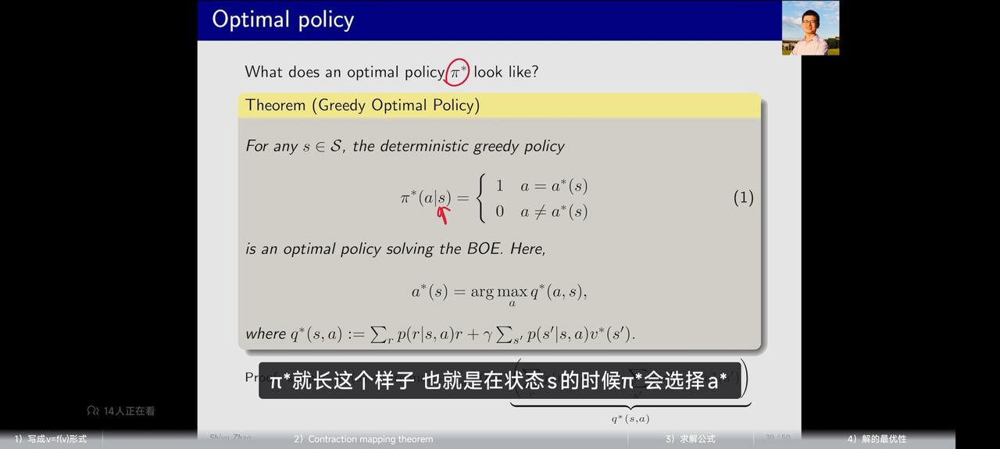
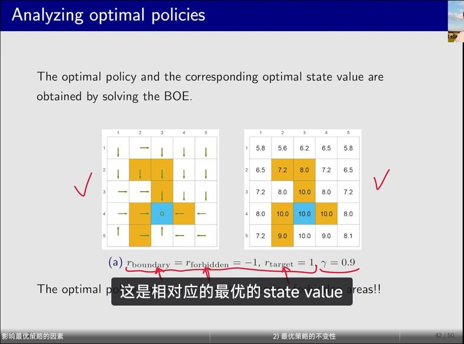
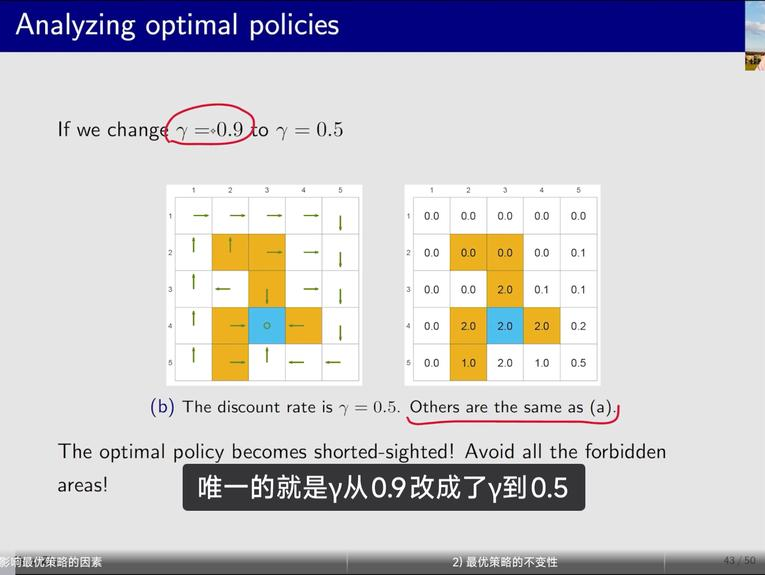
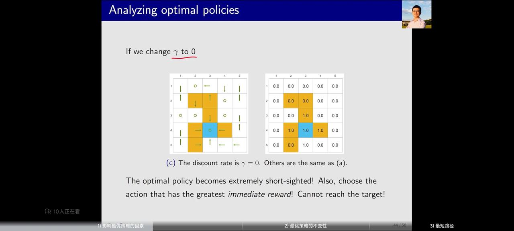
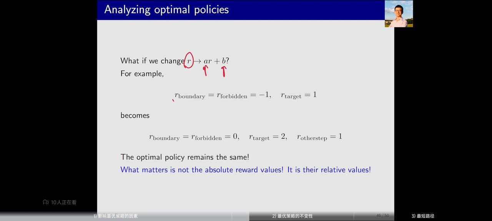
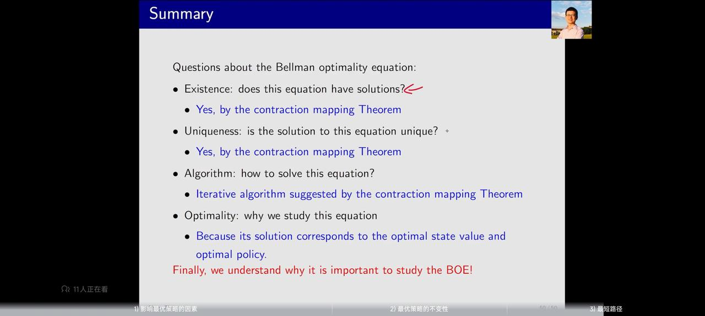
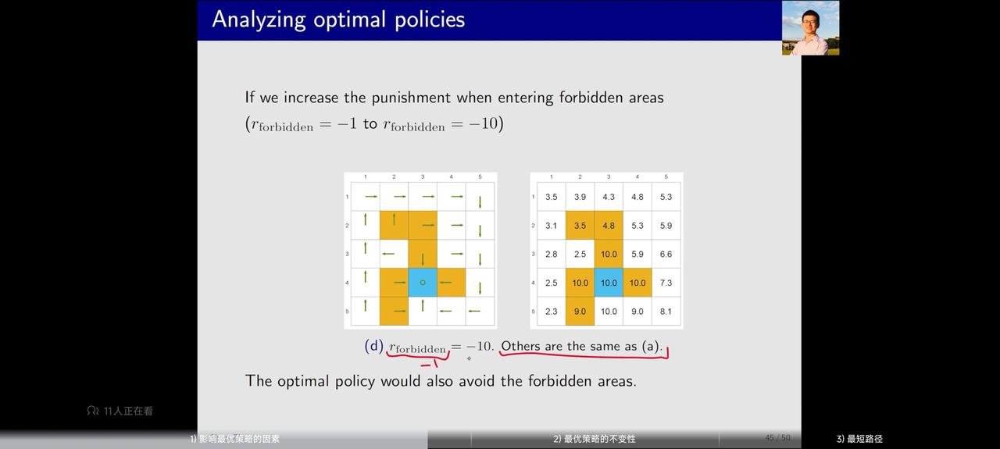

强化学习学习笔记（三）贝尔曼最优方程
1. 动机
动作的价值对我们来说很重要，动作的价值是与当前自己要执行的动作的概率无关的，我们从grid model案例中可以得到：qπ(s, a) = r + γv(s′)，当前的动作是好与坏可以通过当前的动作的价值Q得到。
那么很明显，当前最好的动作就是q值最大的动作，也就是a* = argmaxaqπ(s, a)。
如果强化学习模型没有训练，策略是随机的，那么价值Q就不一定能够合理评估动作的价值，因为qπ(s, a) = r + γv(s′)公式中，v(s')不一定能够准确衡量状态的价值,其他状态下模型可能乱做动作，导致估值失准。但是通过迭代优化的方式（iteration loop），能够通过不断学习，准确评估每个状态的价值，进而给每个动作估值，最后能够实现根据贝尔曼最优方程选动作。
2. 贝尔曼最优公式 - 定义与问题
如何评估两个价值函数的好或者不好？通过价值函数。
于是，我们可以定义价值函数的评价标准： vπ1(s) > = vπ2(s), 对于任意s ∈ S 那么就说明策略 π1优于策略π2
如果一个策略π*的所以状态值都比其他策略要好，那么就说这个策略是最优的。
存在的问题：
- 最优策略是否存在？
- 最优策略是否唯一？
- 最优策略是随机的还是确定的？
- 最优策略如何得到
这些是研究贝尔曼最优公式要解决的问题。
2.1 贝尔曼最优公式（BOE）
根据上述张杰的定义，此处直接给出贝尔曼公式的形式：
v(s) = maxπ∑aπ(a|s)[∑r(p(r|s, a)r) + ∑s′(p(s′|s, a)v(s′))]
对于任意s∈S 和贝尔曼公式的
最大区别在于公式的最前面多了一个max
需要指出的是，公式里面的p(r|s,a)，
p(s'|s,a)是已知的而且是由外部系统决定的（world），v(s)和v(s')是未知的，π(s)实际上也是未知的，需要通过迭代的方式求解，求解的目标是最大化π
贝尔曼最优公式中如何求解是一个问题，我们需要找出一个a，使得整个v值能够最大化。现在的情况是有很多个动作：a1，a2，...a5.
，每个都能够算出一个q值，即q1,q2，...q5
我们希望求解最优的π，可以知道，用贪心策略选q最大的动作，可以让这个值最大，也就是让最优的q的π为1的时候，整体的v(s)是最优的。
具体证明是这样说的：我们现在希望最大化c1q1+c2q2+c3q3，其中c1+c2+c3=1
且c非负（对应着概率），可以知道，如果有一个q3是比其他q更大的，那么，直接令c3=1，c1=c2=0，就是c1q1+c2q2+c3q3的最优解。其他情况下的
结果不会比这个更好。
这样的思路可以用在求解贝尔曼最优公式之中。
最后的结果表示，贝尔曼公式的最优结果也就是 maxπ∑aπ(a|s)q(s, a) = maxa ∈ A(s)q(s, a)
在取最优的情况下，应该能够得出： π(a|s) = 1, if : a = a*, else : 0 这里的a* = argmaxaq(s, a)
直观的解释，就是最优的动作，给确定的概率1，其他动作都给0
2.2 贝尔曼最优公式的求解
为了求解贝尔曼最优公式（本质是v＝f（v）求不动点，为了求解，可引入constraction property Theorem，并且证明可以通过迭代的方式获得v＝f（v）最优解。
这里补充constration mapping 定理，可以用于求解不动点。 

满足constraction property的式子（‖f（x2）-f（x1）‖＜γ‖x2-x1‖具有以下三个特性：
1. 解是唯一的、 2. 解是可以迭代出来的 3.
通过迭代的时候速率是指数级的
满足贝尔曼最优公式的式子的时候，策略Pai就是让这个价值函数最大的策略，这时候把他称作π* 从而就有了贝尔曼最优公式： v*＝rπ* + γPπ*v*
也就是贝尔曼最优公式是一个特殊的贝尔曼公式。
最优策略：是确定性的，而且是贪心的
2.3 贝尔曼公式的参数：γ

gamma＝0.9的时候，智能体会长远考虑，认为穿过禁止进入区域虽然暂时有害于智能体，但是长远来看是有价值的，因此还是穿过forbidden area gamma＝0.5的时候，智能体会短视，因此会避开forbidden area 绕一个大圈进入最后的终点。

 gamma降低到0的时候，最优策略变成非常短视，无视未来的奖励。
最优策略的不变性：  如果放大奖励的倍数，最后获得的最优策略是不变的
如果智能体绕路，为什么策略不是最好的？ 因为折扣率存在，决定了智能体获得的总的回报。所以两个不同情况下，获得的总return是不一样的。
3.小结：
3.1 贝尔曼方案最优解的性质：
解一定存在且唯一（根据contraction mapping定理），这个定理是用于求解
f(v)=v的方法 算法是使用迭代的过程求解，而且迭代的速度很快
为什么我们要学习这个等式？ 因为求解它对应
最优的状态价值，并且可以得到最优的策略。 
3.2 复杂例子
假设进入forbidden区域奖励是-10，进入边界奖励是-1，到达目标奖励是+1。 
这个例子是比较复杂的值迭代和策略迭代的求解方式，最开始的时候所有策略都是原地不动，但是随着值迭代和策略迭代，可以看到首先是距离目标近的地方的值和策略被改成最优的，然后是距离目标远的他的策略变成最优。